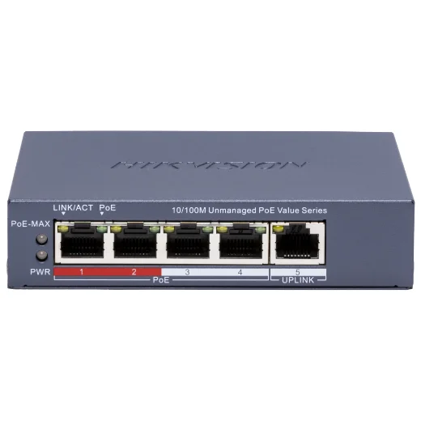
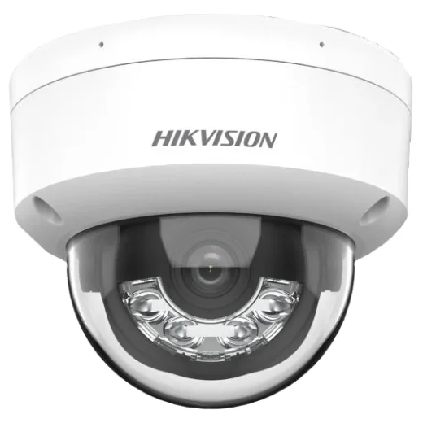

Віртуальна лабораторія на обладнанні Hikvision. Налаштовуйте камери, реєстратори, домофони, контроль доступу й охоронну сигналізацію так само, як на справжньому стенді, просто в браузері.
Сім робіт за методичними рекомендаціями курсу. Кожна закінчується автоматичним звітом.


Лабораторна робота № 1 · Інтегральні системи безпеки
13 кроків від активації до резервної копії. Після кожного кроку натискайте «Перевірити», а звіт сформується автоматично.